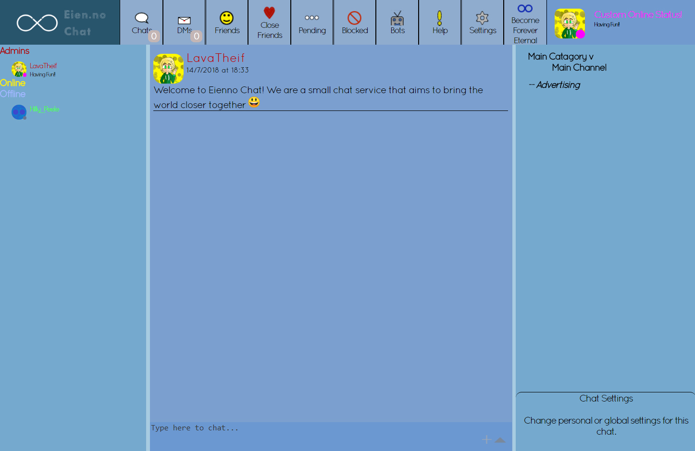
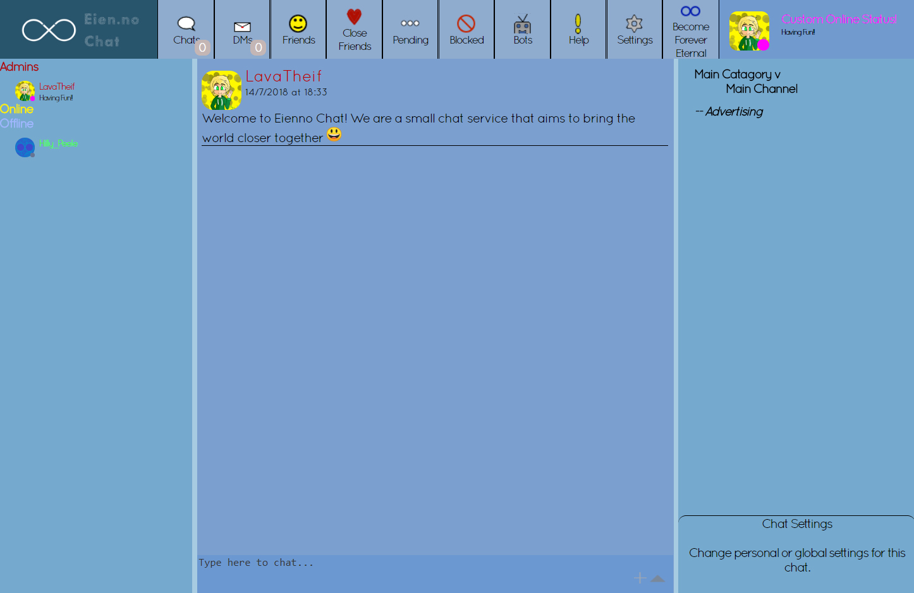
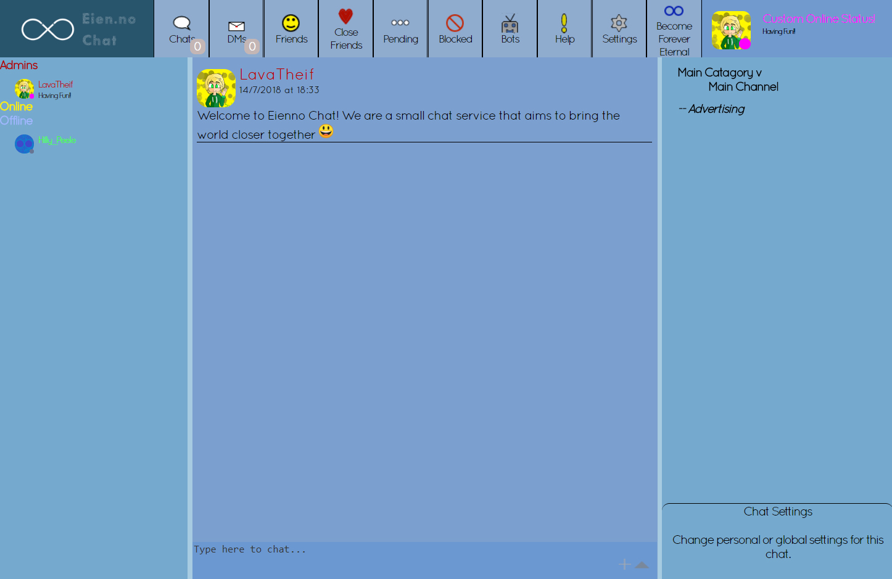

Eien.no Chat was a website that allowed users to chat to one and other privately, or create a server that would let
them invite friends and chat together, similar to discord and slack. Servers could also be opened to the public
which would allow users to search for it in the servers search menu.
The system was built with scalability in mind, and allowed for servers to be added and removed if demand drastically changed. The servers could be managed from a separate admin panel, and were controlled by various handlers which monitored user counts and commands. These handlers would also send notifications to alert me if a server began running over its maximum capacity.
The servers ran using various AWS instances and where configured to act as one cluster to serve the user requests that came through. All the traffic was routed through CloudFlare to enable SSL and to help mitigate attacks. The database that was used was Cassandra, an SQL-type of database.
The Front End was a web client that performed requests to get, edit and change data on the servers. Each request was accompanied by a token and ID to prove the users identity and prevent anyone being able to send data as that account. The design for the site had many revisions before the final one was decided on, to ensure that it would offer the best user experience possible.
The systems where tested thoroughly throughout development and just before releases to ensure everything ran smoothly. The main focus was on security, and performance, and being able to run with minimal downtime as possible.

 

The system was built with scalability in mind, and allowed for servers to be added and removed if demand drastically changed. The servers could be managed from a separate admin panel, and were controlled by various handlers which monitored user counts and commands. These handlers would also send notifications to alert me if a server began running over its maximum capacity.
The servers ran using various AWS instances and where configured to act as one cluster to serve the user requests that came through. All the traffic was routed through CloudFlare to enable SSL and to help mitigate attacks. The database that was used was Cassandra, an SQL-type of database.
The Front End was a web client that performed requests to get, edit and change data on the servers. Each request was accompanied by a token and ID to prove the users identity and prevent anyone being able to send data as that account. The design for the site had many revisions before the final one was decided on, to ensure that it would offer the best user experience possible.
The systems where tested thoroughly throughout development and just before releases to ensure everything ran smoothly. The main focus was on security, and performance, and being able to run with minimal downtime as possible.
